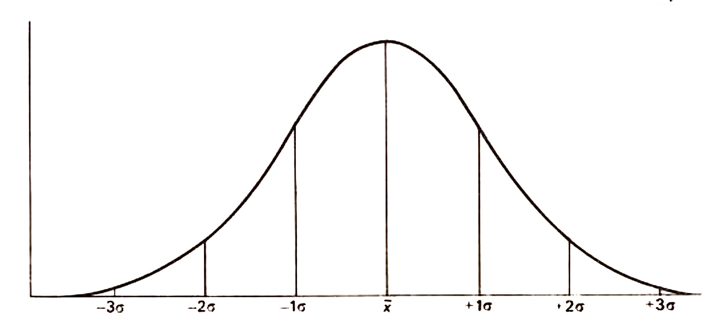
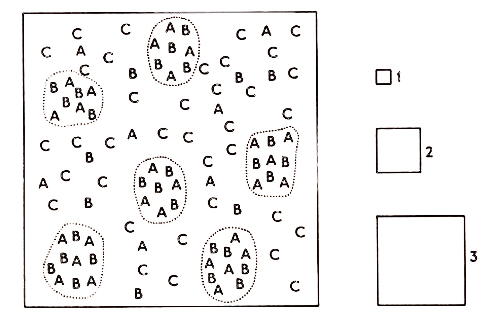

Chapter 2: SAMPLING, TESTS OF COMPARISON AND APPLICATION OF QUADRAT MEASURES
The importance of sampling a plant community so as to obtain the maximum amount of information from one set of samples, has been emphasized by numerous workers and Greig-Smith (1957; 1983) gives a comprehensive and detailed account of the problems involved. However, it is necessary to outline the more important aspects since a series of conclusions will be based on a single sample, and if the sampling procedure is incorrect, then the derived conclusions may be invalid. The importance of sampling has been stressed to the point where an impression is gained that the procedure is very complicated and in the hands of the uninitiated a dangerous tool. This is only partly true, since the approaches to this problem are all based on common sense. Often the correct procedure and also the one that will give the maximum amount of information on the problem in hand, can be readily devised by careful thought beforehand and with only an elementary knowledge of statistical methods. On the other hand since complex sampling methods are widely used advice from a statistician at an early stage may save wasted labour in the field. The necessity to carefully plan the sampling beforehand is important in yet another sense; recording the contents of a quadrat is nearly always a lengthy and a tedious operation and it is very much better to obtain all the required information from one set of quadrats rather than to have to go back and repeat the sample so as to obtain additional information. Thus no hard and fast rules can be laid down; each sampling procedure should be thought out in relation to a specific problem, the information required being borne in mind.
Statistical methods
In all ecological work there is a certain error involved in any field observations or experimental results. This error is partly due to the inadequacies of the equipment and, more important, to an unknown amount of variation always found in biological material. Thus it is necessary to know whether the difference between, for example, the number of buttercups in two plots is a real difference reflecting some variation in the environment of the two plots, or whether in fact this difference is more than covered by the error attached to the data. In order to assess the reality of the results it is necessary to compare the difference between them with an estimate of the error, or in other words to test the significance of the result.
Normally it is impractical to count every individual present within an area and accordingly a sample of the density is taken from the total population by using a number of randomly placed quadrats.
Variance and standard error
The following data represent the number of individuals of a species in ten quadrats placed at random in two sample areas:
| Plot I | 6 | 3 | 0 | 1 | 8 | 2 | 7 | 0 | 1 | 4 |
| Plot II | 7 | 11 | 15 | 8 | 14 | 9 | 12 | 14 | 15 | 10 |
The average density is obtained by summing the numbers and dividing by the number of quadrats in each plot:
\[ \bar{x} = \frac{\sum x}{n} = \frac{32}{10} = 3.2 \] \[ \bar{x} = \frac{\sum x}{n} = \frac{115}{10} = 11.5 \]The problem with which the observer is now faced is to decide whether the difference between these two mean values has an ecological significance or whether the sampling error is large enough to explain it. Both sets of data show a range of values reflecting the biological variation of the data and the range (8) is almost equal to the difference between the mean values. It would thus be reasonable to account for the difference in the means by this obvious biological variation. The variation of the density reading is expressed statistically as the variance of the sample and is calculated as follows:
\[ \text{Variance} = \frac{\sum (x - \bar{x})^2}{n - 1} \]This is algebraically identical with
\[ \text{Variance} = \frac{\sum x^2 - \frac{(\sum x)^2}{n}}{n - 1} \]The latter offers an easier alternative to the rather laborious subtraction of the individual values from the mean value and squaring the results. The divisor (\( n \) - 1) is known as the degrees of freedom of the sample, and is used instead of \( n \) to compensate for using the sample mean instead of the true population mean. That is to say, if the whole population had been included in the sample, the mean density would be an accurate value. As it is, only ten quadrats were taken and the mean value thus obtained is only an estimate of the true mean, and accordingly the use of this sample mean will slightly bias the estimate of sample variance. By using (\( n \)- 1), some compensation for this bias is achieved. Usually the degrees of freedom of a sample are one less than the number of samples taken, though there are exceptions to this. The significance of the difference between the two mean values is assessed by comparing it with the standard error of the difference which itself is related to the variance. The calculation is as follows:
\( {\mathrm{I}} \)
\[ \sum x = 32,\quad n = 10,\quad \bar{x} = 3.2 \] \[ \sum x^2 = 6^2 + 3^2 + \cdots + 4^2 + 1^2 = 180 \] \[ (\sum x)^2 = 1024 \] \[ \sum x^2 - \frac{(\sum x)^2}{n} = 180 - 102.4 = 77.6 \] \[ \text{Variance} = \frac{77.6}{n - 1} = 8.6 \]\( {\mathrm{II}} \)
\[ \sum x = 115,\quad n = 10,\quad \bar{x} = 11.5 \] \[ \sum x^2 = 1401 \] \[ (\sum x)^2 = 13225 \] \[ \sum x^2 - \frac{(\sum x)^2}{n} = 78.5 \] \[ \text{Variance} = \frac{78.5}{n - 1} = 8.7 \]The estimate of the error of the difference between the two means is obtained from the variance of the total data.
Estimate of variance of the total data is given by
\[ V = \frac{ \left(\sum x_1^2 - \frac{(\sum x_1)^2}{n_1}\right) + \left(\sum x_2^2 - \frac{(\sum x_2)^2}{n_2}\right) }{n_1 + n_2 - 2} \] \[ V = \frac{77.6 + 78.5}{18} = 8.67 \]This is the variance of the total data, and the variance of the difference of the means accordingly is \[ V = \left(\frac{1}{n_1} + \frac{1}{n_2}\right) \] \[ \sqrt{V \left(\frac{1}{n_1} + \frac{1}{n_2}\right)} = \sqrt{\frac{8.67}{5}} = \sqrt{1.734} = 1.317 \]
tTests
The standard error of the difference is now used to assess the difference between the means by a t-test:
\[ t = \frac{\text{Difference between the means}}{\text{Standard error of the difference}} \]i.e.
\[ \frac{11.5 - 3.2}{1.317} = 6.302 {\text{with 18 degrees of freedom.}} \]i.e. the difference between the means is more than six times as great as the standard error of the difference and this difference is highly significant. The level of significance is readily obtained from a table of t (Fisher and Yates, 1957). With \( n \) = 18 the probability of exceeding a value of t of 3.92 by chance is very small (\( p \) =0.001). Thus with t=6.3 the difference between the two mean values arising by chance is very much less than 1000:1 and this difference is highly significant. [A 5% level of significance (1 in 20) is usually taken as the level of statistical significance.]
It is important to realize that a significant value oft does not necessarily mean a real difference between the two values. A large value of t can arise either by the difference between two mean values being significant, or by the variance of the two populations being significantly different, or both. Thus it may be necessary in comparing data to use a modified version of the t-test when the variance of the two samples is significantly different. This is readily confirmed by a variance ratio test. In the above example the two sample variances were 8.6 and 8.7 respectively and the ratio of the larger variance to the smaller is approximately 1. From variance ratio tables entered with 9 × 9 degrees of freedom this difference in variance is not significant (a variance ratio of 3.2 has to be exceeded before the difference can be regarded as statistically significant) and the use of a t-test is quite legitimate. (For details of the modified I-test, see Snedecor and Cochran, 1980.)
Confidence limits or fiducial limits

In a normal population with a mean of \( \bar{x} \) the shape of the curve simply relates individual sizes or numbers to this mean value. Thus most of the population is roughly equal to the mean value but a proportion of the individuals are much larger or smaller. Just as the variance of the population is a measure of the variability then the standard deviation (standard deviation = \( \sqrt{\phantom{x}} \) variance) is a linear standard of measurement along the \( x \) -axis (Fig. 2.1). The total population of individuals in fact is contained in approximately three standard deviations either side of the mean. The majority of values lie close to the population mean x and it can be shown from a table of \( C \) (see Fisher and Yates, 1957) that 68.26% of the population falls within one standard deviation either side of the mean. Identical considerations apply to populations of mean values where 68.26% of the population of sample means falls within one standard error of the true population mean value (S.E.M.). The 68.26% confidence limits are then simply:
| Upper limit | = | \( \bar{x} \) | - | 1 | S.E.M |
| Lower limit | = | \( \bar{x} \) | + | 1 | S.E.M |
Similarly for a 5% level of significance, the 95% confidence limits are:
| Upper limit | = | \( \bar{x} \) | - | 1.96 | S.E.M |
| Lower limit | = | \( \bar{x} \) | + | 1.96 | S.E.M |
| \( \bar{x} \) | + | 2.58 | S.E.M |
From the data above
\[ \text{S.E.M.} = \sqrt{\frac{V}{n}} = \sqrt{\frac{8.6}{10}} = 0.93 \]and the 95% confidence limits are:
\[ \bar{x} \pm 1.96 \cdot \text{S.E.M.} = 3.2 \pm 1.96 \times 0.93\] \[= 3.2 \pm 1.82 \]The probability is 0.95 that 1.4 and 5.0 include the true population mean.
Similarly the 99% confidence limits are 3.2 \( \pm \) 2.40. A statement of the confidence limits, as a scale mark in relation to graphed data, enables a rapid visual assessment of both the significance of any differences as well as the quality of the data. \( x^2 \)-Test for association between species, scatter diagrams
Useful information can be obtained from field data on the possible interrelationships between different species by counting the number of quadrats out of the total in which one or both of a pair of species are found. For example in n quadrats, a contained species \( A \) and \( B \), \( b \) species \( B \) alone, \( c \) species \( A \) alone and \( d \) quadrats contained neither species \( A \) or \( B \). A 2 x 2 contingency table is then made up as follows:
| Species A | ||||
|---|---|---|---|---|
| + | − | |||
| Species B | + | a | b | a + b |
| − | c | d | c + d | |
| a + c | b + d | n | ||
It can be calculated that the number of quadrats containing both \( A \) and \( B \), provided they are not associated in any way, should be [(a + b)(a - c)]/\( n \). Thus we have a, the observed number of quadrats containing both species and we can calculate the expected number assuming an independent relationship between the two species. The other expected frequencies of the different \( A \) and \( B \) quadrat combinations can readily be obtained simply by subtraction from the marginal totals. Thus the expected number of quadrats \( \+ \) \( A \), \( \ -\) \( B \) would be
\[ (a + c) - \frac{(a + b)(a + c)}{n} \]The number of observed quadrat combinations of A and B can now be compared with the expected number by a \( x^2 \)-test.
The calculation of \( x \) is conveniently done from the formula
The \( x^2 \) tables are entered with one degree of freedom. The \( x^2 \) value shows whether the difference between the observed and expected numbers of quadrats is significant or merely due to a chance fluctuation. The trend of the association, i.e. whether the association is positive or negative, is given by a comparison of the expected and observed values for the joint occurrence of \( A \) and \( B \). Thus if \( A \) and \( B \) occur together more frequently than the expected number of joint occurrences, then \( A \) and \( B \) are positively associated. Similarly if \( A \) and \( B \) occur together less than expected they are negatively associated.
The level of association between species is very quickly calculated but since the data are basically a measure of frequency the result obtained is dependent on quadrat size. Consider the relationship of species \( A \), \( B \) and \( C \) as shown below (Fig. 2.2).
Clearly by inspection \( A \) and B are markedly positively associated; \( A \) and \( C \) and similarly \( B \) and \( C \), negatively associated. Now consider the effect of sampling in a random fashion such a population with quadrat size 1, roughly equal in size to the individuals \( A \), B and \( C \). Most quadrats would contain either \( A \) or \( B \) or \( C \) or none of them, but hardly any quadrats with \( A \)\( B \), \( A \)\( C \) or \( B \)\( C \). Accordingly the \( x^2 \)-test would show strong negative association between all species. With quadrat size 2, \( A \) and \( B \) would on the average be found frequently together and species \( C \) on its own. A \( x^2 \)-test would confirm the obvious trends of association between \( A \), \( B \) and \( C \). However consider finally the sampling of the layout with quadrat size 3. Nearly all quadrats would contain species \( A \), \( B \) and \( C \) and, in this instance, the number of quadrats containing neither of the pairs of species would be zero and \( x \) cannot then be calculated. However, assume the same pattern but with a much lower density of individuals, then the final size of quadrat would show nil association or possibly a positive association between all paired combinations of the three species. It is possible to get three trends of association merely by changing the size of sample quadrat and considerable care must be taken in interpreting a set of positive and negative associations.

Obviously in this instance the pattern of distribution relative to the size of quadrat is important and, since most if not all vegetation contains pattern (see Chapter 8), the trend of association will always vary considerably with different sizes of quadrats. As Greig-Smith (1957, 1983) points out, little attention has previously been directed to this important point and yet it has far reaching effects in the considerations of statistical analysis of community groupings (p. 156). If however the scale or scales of pattern are known, then the variation of trend of association between two species with increasing quadrat size gives valuable information as to the detailed interrelationships of the species in the area examined. When data is in the form of a quantitative measure as opposed to mere presence and absence, then a correlation coefficient is a more appropriate measure of the degree of association; details of the calculation are obtainable in any book of elementary statistics (but see below).